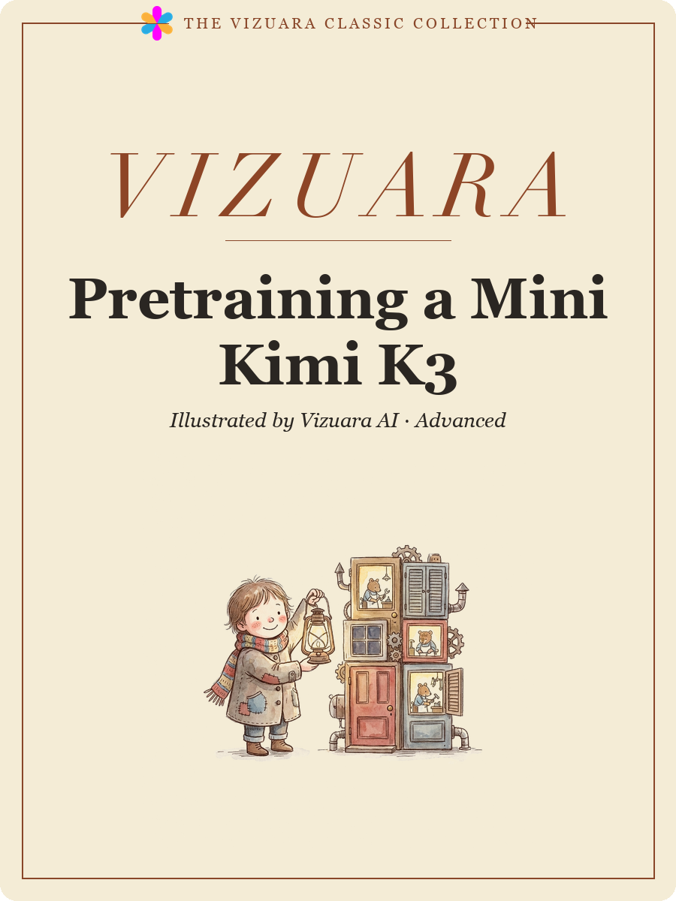

One H200, five billion tokens, $252.35 — the complete worklog of a Kimi K3 replica trained from scratch.
A worklog of a pretraining run that finished. A 1.02-billion-parameter Kimi K3 replica trained on 5.00 billion decontaminated tokens for $252.35: the architecture and the arithmetic of shrinking it, the corpus and its 13-gram decontamination, four undocumented reasons the released code cannot train, a router that killed 94.5% of its experts by step 20, sixteen numbered attempts to raise MFU of which three worked, three distributed bugs that never crash, and twenty-four benchmark evaluations taken across the run.
What we trained, what it cost, and the practices that separate a run you can publish from a run you cannot.
A 1.02B-parameter Kimi K3 replica, 5.00 billion tokens, 38,147 steps on one H200, final loss 2.62 — the run in one pass, with the claims and their limits stated up front.
Decontamination, a scaling ladder, a WSD schedule, a decay anneal, continuous evaluation, real checkpointing, a spike protocol and MFU tracking — eight practices, and what each one changes about the outcome.
A worklog, not a tutorial: every number is measured, every failed idea is written up as fully as the successful ones, and the commands that produced each figure are included.
Kimi K3 as Moonshot released it, and the arithmetic of shrinking it to something one GPU can train without turning it into a different model.
93 layers, hidden 7,168, 896 experts with 16 active, 69 KDA layers against 24 MLA, situ, noaux_tc — the released configuration turned into a mental model of where every FLOP goes.
Why a '40M active parameter' model is arithmetically impossible with a 163,840-token vocabulary, what the 834M always-on floor taught us, and how r1's 1.02B total / 145M active was actually chosen.
The delta rule with a per-channel forget gate, multi-head latent attention at a 128/64/128 split, and why exactly every fourth layer keeps exact global retrieval.
256 experts, 6 active, 2 shared, a latent bottleneck at half the hidden size, and a sigmoid router with the aux-loss-free balancer K3 inherits from DeepSeek-V3.
A parameter counter you can only trust if it reproduces K3's own published 2.8T and 104B first, and what it says about where r1's capacity actually sits.
104.80 billion tokens from six sources, decontaminated against eight benchmarks before tokenization, in a shard format the loader can resume from mid-run.
FineWeb-Edu as the spine, five more sources around it, and the two gated repositories that shaped the mix more than any design decision did.
2,398,082 unique 13-grams over eight eval sets, 107,291,411 documents scanned, 138,064 removed, and why the maths corpora dropping ten times more than the web is the result that makes the filter believable.
HumanEval matched 88.78 times per indexed n-gram against HellaSwag's 0.02, and every removed document was generic Python. What that measured, why it was not leakage, and the coverage limit we report rather than bury.
Keeping K3's own tiktoken BPE, the byte-for-byte round-trip gate, the literal [EOS] trap that would have injected document breaks mid-page, and why shards are uint32.
Stable and decay mixes built from measured tokens-per-file, and a string-splitting bug that pointed four of six sources at files that did not exist while the loader silently renormalised onto the two that survived.
The released modeling code cannot train. Four undocumented blockers, a training loop built around them, and the two failure modes that do not crash.
An assert against training mode, a NotImplementedError in the MoE forward, a balancer bias that is never initialised, and a timestep bias left as uninitialised memory that returned NaN on one rung and trained fine on another.
Warmup, stable and decay instead of cosine; 131,072 tokens per step from 4,096 x 4 x 8; a learning rate transferred from one measured sweep; and the spike protocol written down before the run rather than at 3am.
Twenty steps in, 94.5% of experts were receiving no tokens while router entropy read 0.99 out of 1.0. Why entropy passes a collapsing run, and the four-value sweep that fixed it.
A checkpoint is the whole run, not the weights: optimizer moments, dataloader cursor, RNG, the spike-guard EMA. Proven by resuming twice and comparing the losses bitwise.
Liveness from heartbeat timestamps rather than log streams, twenty-four failure-injection tests, and two alert thresholds that would have killed healthy runs the moment the kill switch started working.
An MFU investigation with sixteen numbered attempts. Three worked. The rest are written up in as much detail, because the reasoning behind them looked sound.
Model FLOPs Utilization from first principles, the four ways a measurement fools you, and the arithmetic that turns a percentage into a training budget.
Step time barely moved as tokens grew eightfold, which is the signature of fixed per-step overhead. 3,840 kernel launches, three batched matrix multiplies, and an equivalence check to 3.9e-08.
Padding waste, model size, chunked buffers, float32 activations, attention kernels and torch.compile — each hypothesis, each measurement, and the single profile that explained why all six had to fail.
Grouping every CUDA kernel by which part of the model it belongs to, the double-counting mistake in the first version of the table, and what memory-bandwidth-bound means for every lever available.
A fused situ activation that won by being smaller rather than faster, a dispatch cleanup worth 13% per step, and a numerically perfect RMSNorm kernel that ran out of memory on shapes the released module handles.
Two attempts at FP8, four to eleven times slower than the format it replaces, and a B200 that is 20% faster in absolute throughput at roughly half the MFU. Both results are real, and both are about ratios.
A non-monotonic throughput curve and memory that did not move when the batch did — two shapes no scaling story can produce, and the capped buffer quietly reverting 23 layers to the loop it was written to replace.
r1 fits on a single H200. Everything above it does not, and sharding a mixture of experts introduces bugs that produce a finished run that is quietly wrong.
ZeRO-3 in practice: what lives on each rank, why 35.56B parameters means 498 GB of optimizer state, and the arithmetic that decides how many cards a model needs.
Every rank reading the same tokens, a load balancer computed on per-rank load, and a spike guard each rank decided independently. Each one completes the run and returns a model that is wrong in a way no error reports.
The loss curve, twenty-four benchmark evaluations across the run, and what five billion tokens buys a 145M-active model.
Starting at ln(163,840), the stable phase, the switch to the decay mix at step 32,430, zero skipped spikes and zero dead experts across 38,147 steps.
HellaSwag from 27.0% to 33.4% and held-out perplexity from 22.65 to 13.61, while MMLU, ARC-Challenge and WinoGrande never left chance. Which capabilities arrive first at this scale, and why.
The full ledger, what we would do differently, what the rungs above r1 were for, and the difference between a small model that works and a small model that is merely finished.